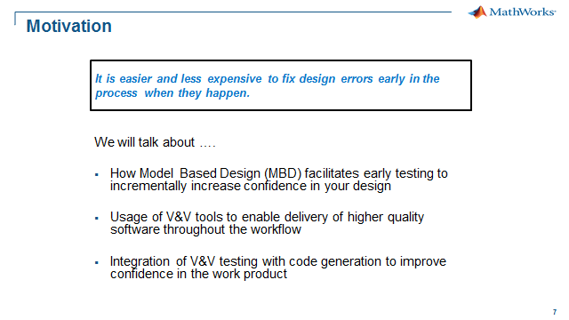
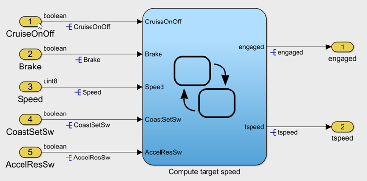
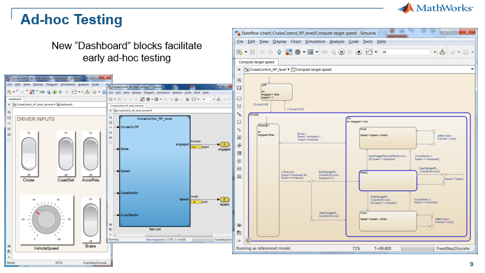
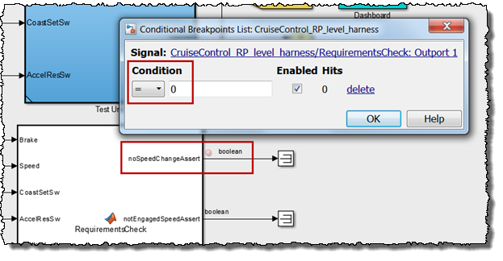
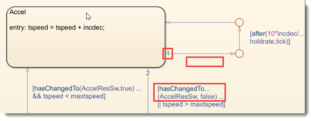
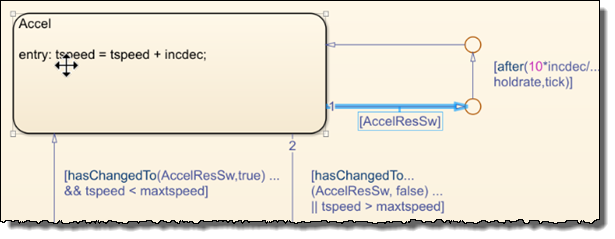
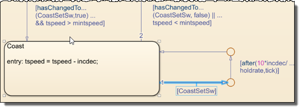
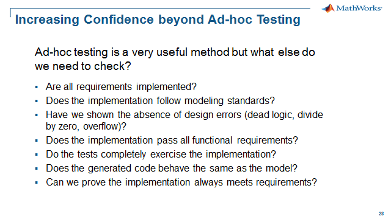

Step 0: Ad-hoc Testing
Contents
Workshop Motivation

Verification and Validation Tools Used
- Simulink
Workshop Model Description
This workshop will walk you through many of the stages of verification, validation and testing of Simulink models. The model we will use in the workshop is a cruise controller that has been designed from functional and safety requirements. The initial design is a prototype with floating point signals and calibration parameters. Later we will use a fixed point equivalent model for production coding. For now let's examine the model to get an understanding of the controller architecture. In the next section we will run the model to examine its functionality.
Open the Cruise Control model - click here.

Ad-Hoc Testing
Now we will test the functionality of the controller. To begin testing the cruise controller, we will use a test harness that will allow us to manually change the inputs and observe the behavior of the controls state machine along with the outputs. This is an initial informal test that can often catch design issues early in the development. The test harness contains controls from the Dashboard library which is part of the base Simulink library. The Dashboard blocks allow you to easily modify the inputs to your model to exercise its functionality
Open the Cruise Control Ad-Hoc test harness model - click here.

Catching a "Bug"
The Cruise Controller in this example has a rather severe design issue which may reduce or increase the target speed to its limits without a continuous input of the "CoastSetSw" or the "AccelResSw" input. The bug will reveal itself based on when you release the input buttons. It may be a little tricky to catch this issue but it is possible with the Ad-hoc test harness.
One way to catch the bug would be to visually inspect the results as we toggle the inputs to uncover the design issue. What if we could create a model based on some of the key requirements to detect when a requirement was violated during the Ad-Hoc testing? A Simulink Test, Test Sequence block already in the test harness can be used to check the requirements while the model is running.

To help debug the issue we will use a breakpoint on the output assertion signal for the "No Speed Change" check. Also note the inputs to the block include the controller input and output signals which facilitates checking of the expected outputs based on the input signal events. Run the model to try to reproduce the issue while using the breakpoint to debug. The model will pause for the breakpoint once you have reproduced the issue.

The nature of the issue is that it is possible to miss the "hasChanged" event for the increase or decrease speed button. Above the issue is highlighted for the "AccelResSw" or increase speed button input. There are two design issues regarding "[after(10*incdec/holdrate,tick]" causing this behavior:
- The transition will be valid when "AccelResSw" is false
- The transition is being evaluated first, so it is possible to miss the "hasChanged" event

A more robust design is shown below that incorporates these improvements where a pre-condition "[AccelResSw]" canhas been added before the "after(10*incdec/holdrate,tick" condition so the speed will not change when the button is no longer pressed and it will not miss the "hasChanged" event. A pre-condition "[CoastSetSw]" also needs to be added to the "CoastSetSw" hold logic. Run the improved model to check the fix has resolved the issue.


What's next?
Ad-hoc testing has shown to be an effective method to find and debug design issues. But there are several unanswered questions with regard to the completeness of the testing. The purpose of the workshop is to transform our testing from an ad-hoc approach to a structured and formal testing framework for securing the quality, robustness and safety of our cruise controller.

Now that we have familiarized ourselves with the workshop model, fixed an issue, let's continue the workshop to learn methods to answer the above questions.
- Close all models - click here
- Go to Step 1: Requirements Traceability - click here.